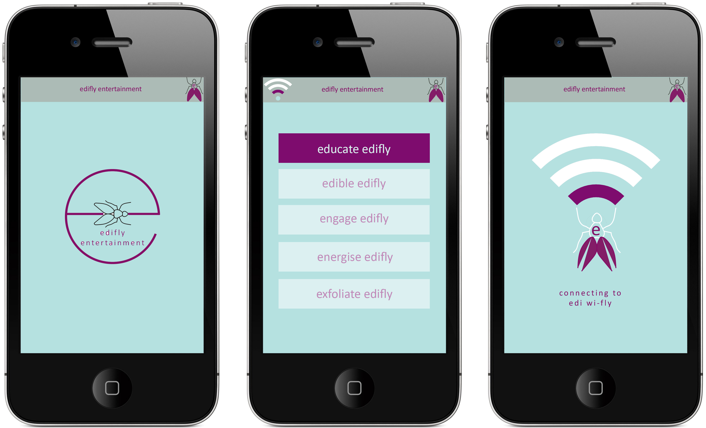
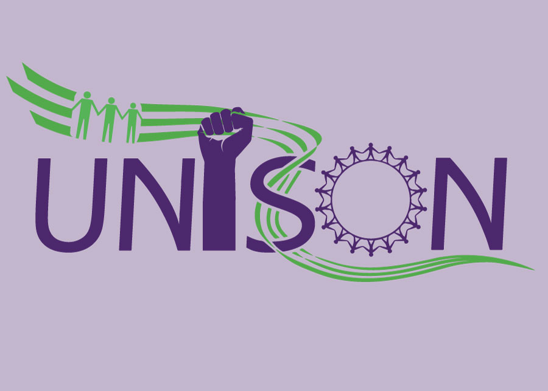
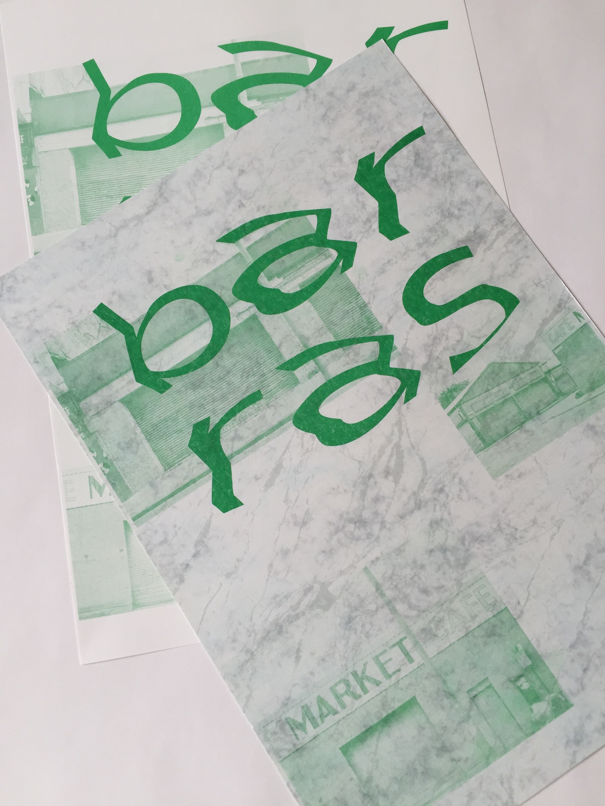

 edifly App for Edinburgh Airport “How can Edinburgh airport maximise the use of social media to increase their commercial revenue?” - Marketing Society of Scotland Idea shortlisted for the Marketing Society Star Creative Student 2015 ')" onmouseout="defaultText(); defaultDesc()">
Refugee Crisis A poster design brief at Massachussetts College of Art & Design ')" onmouseout="defaultText(); defaultDesc()">



Trade Union Banners Competition Designing banners for UK Trade Union rallies in collaboration with textile students at Edinburgh College of Art ')" onmouseout="defaultText(); defaultDesc()">

Designing ‘Barras Typeface’ Two day brief set by Colophon type foundry at the Graphic Design Festival Scotland, 2015 Creating a typeface based on research and investigation of the Barras Markets in the city of Glasgow ')" onmouseout="defaultText(); defaultDesc()">
about
-
2014-2017
Graphic Design BA (Hons), Edinburgh College of Art,
University of Edinburgh, Scotland
-
2016 (Spring Semester)
Massachusetts College of Art & Design,
Boston, MA, USA
-
2013-2014
Foundation Diploma in Art & Design,
University of Falmouth, Cornwall
contact